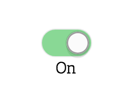
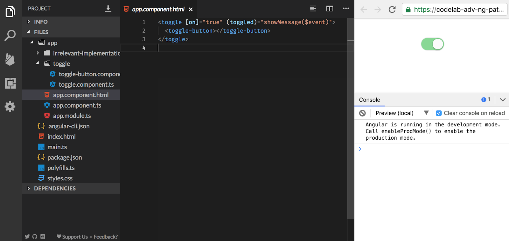
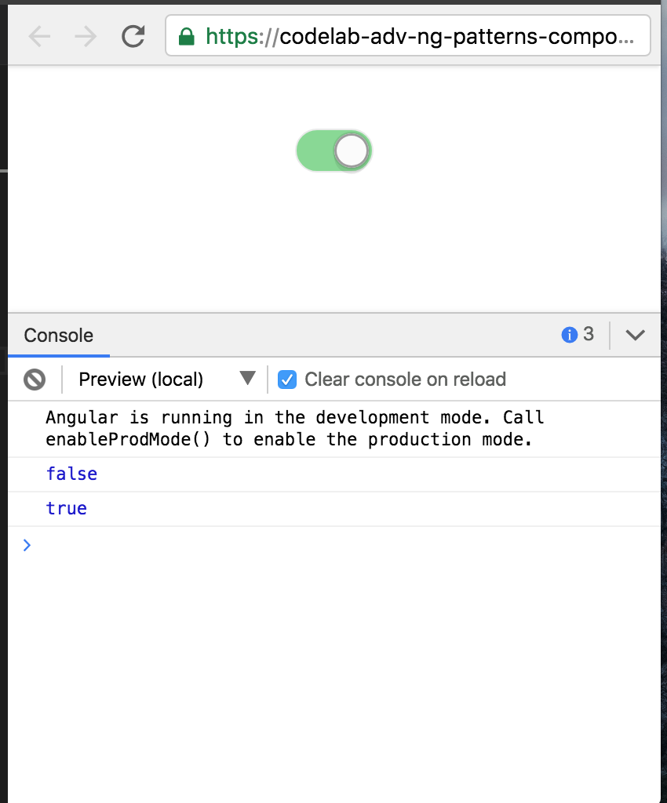
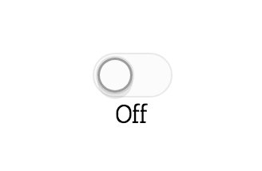
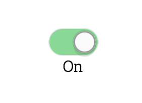
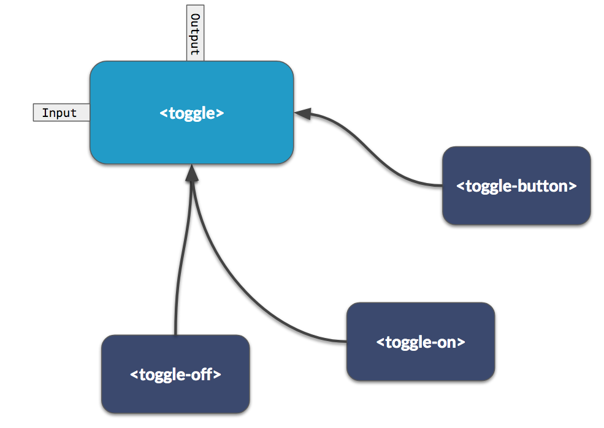
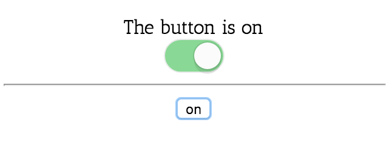
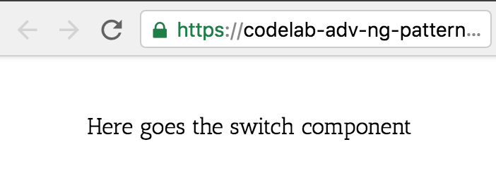

In this codelab we're going to explore some advanced Angular component patterns by building and playing around with a simple toggle component.

What you'll learn
- Container vs. presentational components
- Exchanging state between the parent and child component
- How to manage state with "compound components"
- Decoupling components with Dependency Injection
- Using Directives to manage state
- Customization via dynamic templating
What you'll need
- A browser, ideally Chrome
- Preferably a GitHub account for saving the work being done
The exercises will be done directly in Stackblitz, an online IDE. Make sure you have access to Stackblitz and - although not strictly required - login with your GitHub account. This allows you to fork the exercises and save your intermediate state.

In this Stackblitz example we have already a fully functioning toggle component.
<toggle></toggle>However, it isn't really usable since we cannot communicate the state to our parent.
Modify the component to provide the state to the parent component.
- Allow to set the initial state via an input property
onand - to listen to the state changes via an output property
toggled.
In the end our component API should look like this
<toggle [on]="true" (toggled)="showMessage($event)"></toggle>We want to get more control over how our toggle component is visualized. We want to change our current <toggle> component such that it allows to have inner content components that modify its appearance.
The final outcome should look like this:
<toggle (toggle)="onToggle($event)">
<toggle-button></toggle-button>
<toggle-on>On</toggle-on>
<toggle-off>Off</toggle-off>
</toggle>Let's start by building our <toggl-button> component. Create a new file toggle/toggle-button.component.ts and copy over the content of our current toggle/toggle.component.ts. With this we basically extract the functionality of the "button" into its own component. You can just inline the old template of the toggle.component.ts into the newly created toggle-button.component.ts. You should have something like this:
//toggle-button.component.ts
import { Component, Input, Output, EventEmitter } from '@angular/core';
@Component({
selector: 'toggle-button',
template: '<switch [on]="on" (click)="onClick()" ></switch>',
})
export class ToggleButtonComponent {
@Input() on: boolean;
@Output() toggle: EventEmitter<boolean> = new EventEmitter();
onClick() {
this.on = !this.on;
this.toggle.emit(this.on);
}
}Refactor the toggle component
So far we just did some refactoring and the application should still run. Let's now refactor our toggle.component.ts in such a way that it allows to have inline child components (so-called ContentChildren). Use the ng-content for that.
After that change we should be able to inline our toggle-button component within our toggle component.
<toggle [on]="true" (toggled)="showMessage($event)">
<toggle-button></toggle-button>
</toggle>The app should still be running and the toggle-button also works.

But note that in the console we don't get the messages printed when the toggle state changes and also the initial state doesn't get set properly. That's because our <toggle> and <toggle-button> are not connected and don't share the state. Let's fix that!
Connect the state
To grab the instance of our toggle-button from within our toggle component we can use the @ContentChild(..) decorator.
@ContentChild(ToggleButtonComponent) toggleButton: ToggleButtonComponent;To connect the state between the <toggle> and <toggle-button> compnents we need to do two things:
a) Propagate the events from the toggle-button => toggle => parent
In the ngAfterContentInit lifecycle hook, subscribe to the ToggleButtonComponent's toggled event and properly propagate the state to our ToggleComponent (firing its EventEmitter).
b) Bind the input state parent => toggle => toggle-button
The ToggleComponent already has an input property on. Implement the ngOnChanges lifecycle hook to listen to its changes and set the on property on the ToggleButtonComponent accordingly.
It might make sense to create an update() private function in our ToggleComponent that gets called from the ngOnChanges as well as when our ToggleButton fires. Just to make sure we are always in sync.
private update() {
this.toggleButton.on = this.on;
}Great! We should be all set now. When refreshing the preview window, our toggle should be active and when clicking back & forth it should print out the current state to the console.

Create two more components...
<toggle-on><toggle-off>
...that simply visualize the state of the toggle in form of a text. Here's an example of the toggle-on component
import { Component, Input } from '@angular/core';
@Component({
selector: 'toggle-on',
template: '<ng-content *ngIf="on"></ng-content>',
})
export class ToggleOnComponent {
@Input() on: boolean;
}They don't have any output, but rather just consume and visualize the state. Make sure both the toggle-on and toggle-off get the state passed on just as we did with the toggle-button before.
The final result should look like this:
<toggle (toggle)="onToggle($event)">
<toggle-button></toggle-button>
<toggle-on>On</toggle-on>
<toggle-off>Off</toggle-off>
</toggle> |  |
Right now the toggle component has a very tight coupling to its child components (toggle-button, toggle-on,...). This makes it hard to change components or add others, without having to modify the toggle component itself.
Let's decouple them by using Angular's Dependency Injection like so:
// toggle-button.component.ts
import { Component } from '@angular/core';
import { ToggleComponent } from './toggle.component';
@Component({
selector: 'toggle-button',
template: '<switch [on]="toggle.on" (click)="onClick()" ></switch>',
})
export class ToggleButtonComponent {
constructor(public toggle: ToggleComponent) {}
...
}Right! We can also inject components, not only services!
Refactor our components toggle-button, toggle-on, toggle-off, s.t. they use dependency injection to get/set the state from the parent component.
Now the <toggle> component doesn't even know which child components are there. We inverted the dependencies.

Right now, our ToggleComponent looks as follows:
// toggle-button.component.ts
...
@Component({
selector: 'toggle',
template: '<ng-content></ng-content>',
})
export class ToggleComponent {
...
}Note that it doesn't contain any kind of template, but rather just takes other child content components via the ng-content tag. As a result, let's refactor the component into a directive. You can use both, toggle and [toggle] as the corresponding selector. That allows us to still use it as a <toggle> element or as an attribute on some other existing DOM element.
Verify that the app still runs as expected. After the refactoring, both of these should be possible:
<div toggle (toggle)="onToggle($event)">
<toggle-on>On</toggle-on>
<toggle-off>Off</toggle-off>
<toggle-button></toggle-button>
<other-component></other-component>
</div>And
<toggle (toggle)="onToggle($event)">
<toggle-on>On</toggle-on>
<toggle-off>Off</toggle-off>
<toggle-button></toggle-button>
<other-component></other-component>
</toggle>To save some time, use the following Stackblitz as starting point:
We want to be able to fully customize the rendering of our toggle component, that is printing out a custom text, activating the toggle switch itself and even providing an alternative toggle button.

Creating an ng-template
Create a simple ng-template and pass it to the toggle component.
<toggle>
<ng-template>
Here goes the switch component
</ng-template>
</toggle>Make sure the passed in template gets rendered by the toggle component.
You should get something like this:
Expose the toggle state to the ng-template
We want to be able to render some text based on the state of the toggle
<toggle [on]="true">
<ng-template let-on="on">
{{ on
? 'The button is on'
: 'The button is off'}}
</ng-template>
</toggle>Expose the on state to the template.
You should get this result:

Expose the toggle function to the ng-template
Finally in order to also be able to change the state from within our ng-template, we need access to the toggle function. Expose it to the template s.t. we can use it as follows:
<toggle [on]="true">
<ng-template let-on="on" let-toggle="toggle">
{{ on
? 'The button is on'
: 'The button is off'}}
<switch [on]="on" (click)="toggle()"></switch>
</ng-template>
</toggle>You should now be able to toggle the state and see the text change accordingly.